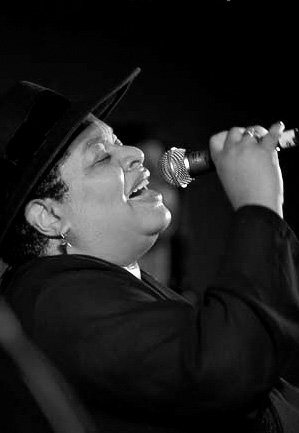
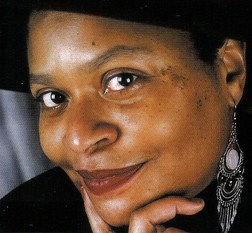
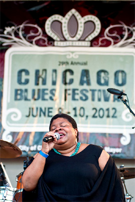

Deitra FARR р. 1 августа 1957, Chicago, Illinois "Deitra has a unique style. One of the smoother voices in the blues.  Ее богатое артистическое прошлое отмечено многими почетными цеховыми регалиями и титулами, и на сегодняшний день она, бесспорно, лидирующий женский голос чикагского блюза, а в национальной блюзовой лиге поспорить с ней по части популярности может только Шемекиа Копланд (она техасского происхождения). Она не только музыкант, но и писательница, поэтесса, художница и журналистка.Deitra Farr! Она начала петь в хоре католической школы, и музыка была делом семейным, так что микрофон в руки она впервые взяла в ансамбле, которым руководил ее родной дядя. И еще подростком она пела с блюзовыми (хоть и не родными, но все же) дедами: Homesick James, Louis Myers и Sunnyland Slim. На профессиональную эстраду вышла в середине 70-х. В 18 лет, будучи солисткой группы Mill Street Depo она отправила в ритм-энд-блюзовые чарты песню "You Won't Support Me" - шикарную соул-балладу в классическом мотауновском стиле, где ее юный голос сверкал глубокой страстью и достигал нот заоблачной высоты.
Из вполне перспективной в коммерческом отношении соул-группы она ушла, чтобы петь блюз. Высокие ноты ей больше не требовались, зато голос обрел столь нужную блюзу весомую уверенность; романтичность осталось прежней, ее стиль теперь называют «мягким» (smooth), но она очень деликатно оттеняет эту «мягкость» долей блюзовой горечи. В своих программах она примешивает многие из близких блюзу стилей – от легкого джаза со скэтовой импровизаций до классического госпел. В начале 90-х Дейтра Фарр была участницей блистательной группы Mississippi Heat . Под предводительством уникального харпера Pierre Lacocque этот ансамбль всегда был своеобразной лабораторией чикагского блюза, где исследовались самые разные его стилевые аспекты. И шикарный голос Фарр был его главным козырем на концертах. Выпустив в 1997 году дебютный сольный альбом «The Search is Over», Дейтра официально покинула ряды Mississippi Heat, но отнюдь не поссорилась с энтузиастами «Миссиссипской жары» - время от времени они продолжают выступать вместе, и в последнем альбоме группы «Delta Bound» (2012) она солирует в трех номерах. А выдающийся гитарист Billy Flynn, специалист по современному вест-коаст, играет в ее альбоме Let It Go (2005). Блюзовый деятель – это в буквальном смысле про нее. На блюзовом поприще Дейтра Фарр деятельна весьма! Она участвует в таком большом количестве разных блюзовых проектов, что за ней и уследить трудно. Когда старым друзьям нашего клуба: органисту Raphael Wressnig и гитаристу Alex Schultz – потребовался несомненно блюзовый ингредиент для их прогрессив-джаз-блюзового альбома Soul Gift (2012 ), они выбрали именно голос Дейтры Фарр. (песня All That I Got) В Чикагском университете Фарр получила диплом по журналистике. И уже немало лет ведет рубрику «Как артист артисту» в старейшем и авторитетнейшем ежеквартальнике Института южных культур Миссиссиппи «Living Blues».Дейтра Фарр – регулярный участник Чикагского блюз-фестиваля, и каждый год гастролирует в Европе, выступает на крупнейших блюз-и джаз-фестивалях. Она побывала уже более чем в 30 странах, в 2014 году она впервые приехала в Россию. Гастроли стали возможны благодаря ээнтузиазму Омара Итковицы (привозившего в ДуД уже более дюжины «коренных» блюзменов). Блюзбэнд «King Size» Омара Итковицы аккомпанировал в российском туре, включавшем в себя Кемерово, Томск, Академгородок, Красноярск, Новосибирск, Нижний Новгород, Барнаул и Москву. 
|